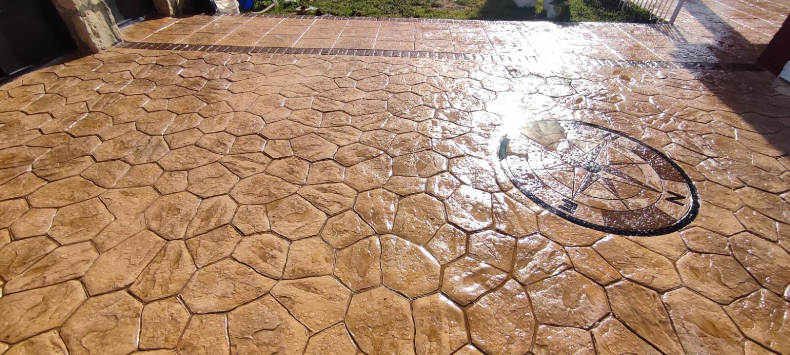
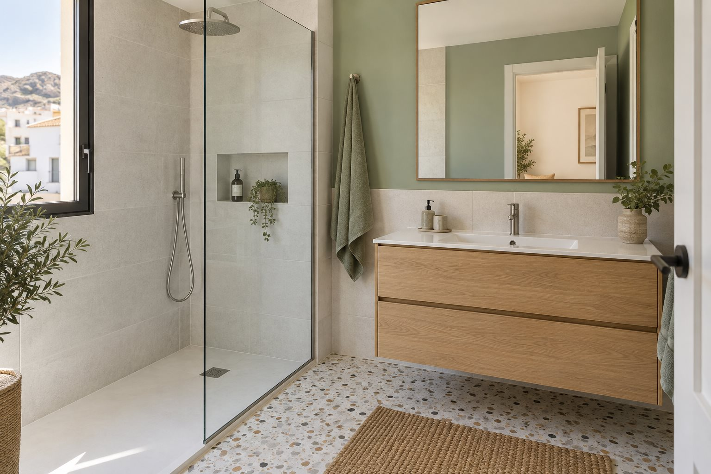
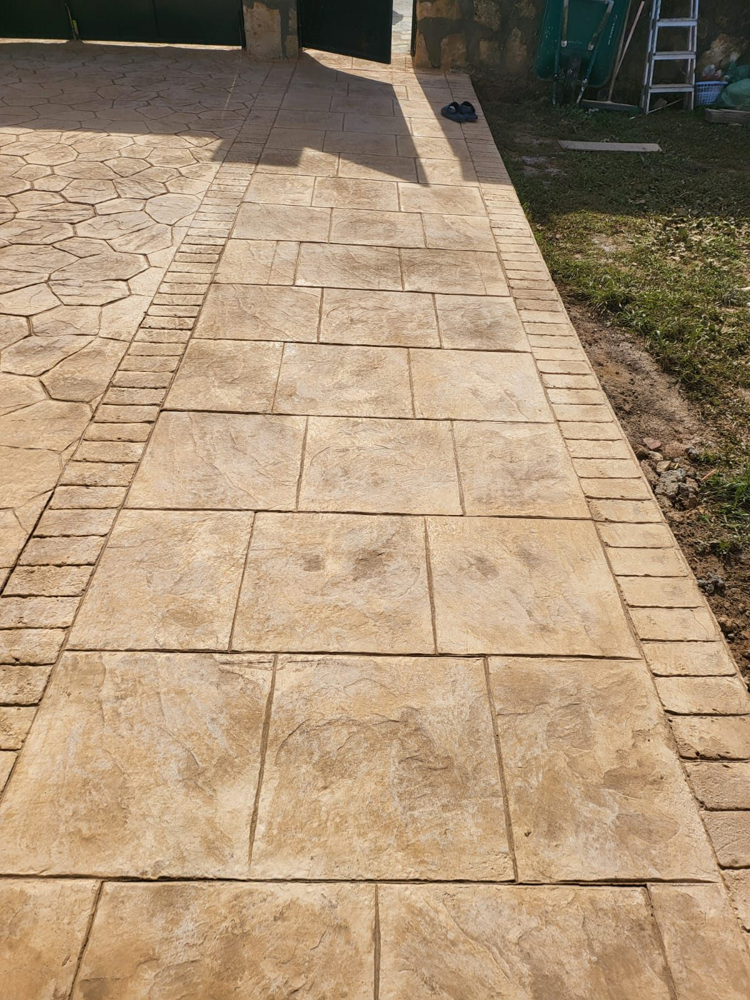
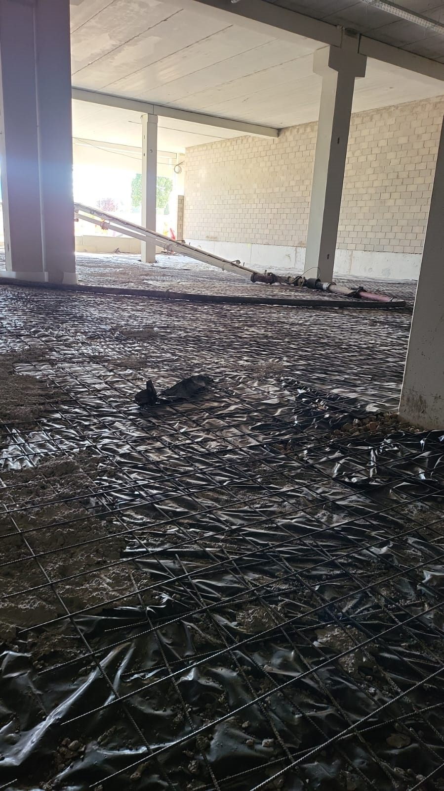
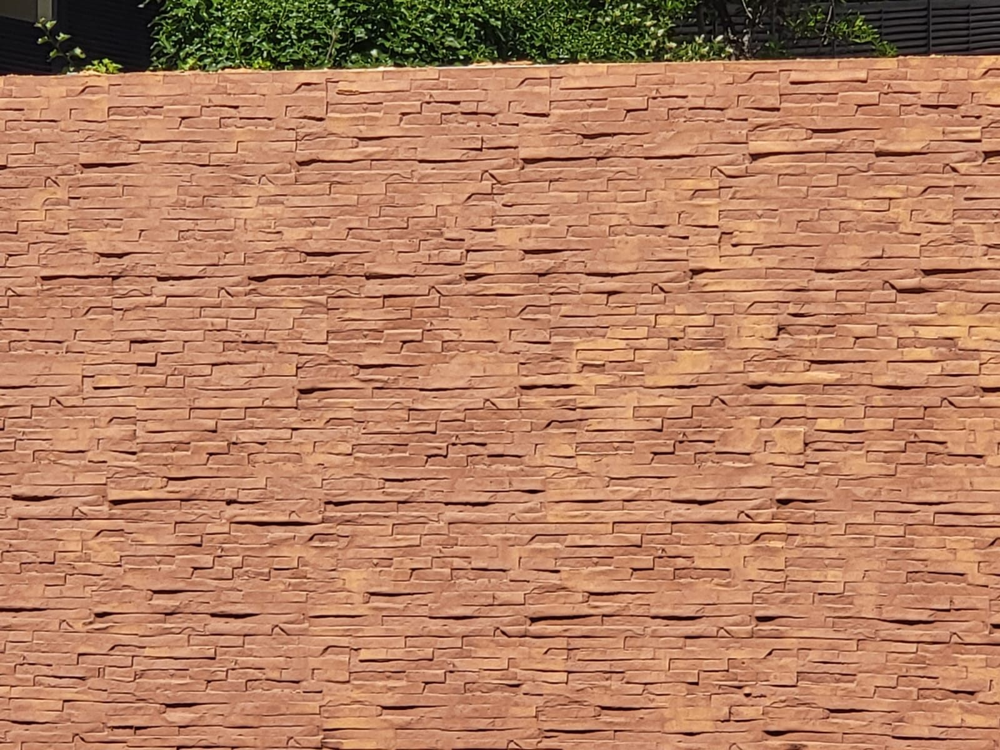

Interiores y exteriores
Reformas y pavimentos en Madrid
Todo tipo de reformas en Madrid y provincias cercanas, integrales o parciales. Viviendas, cocinas y baños, con la misma atención al detalle que dedicamos a nuestros pavimentos.
Pedir una valoración →
01Reformas integrales y parciales
Renovamos viviendas completas o las estancias que necesitas cambiar. Valoramos el estado actual, la distribución y los acabados para definir el alcance de cada trabajo antes de empezar.
- Reformas de pisos, casas y locales
- Redistribución y trabajos de albañilería
- Renovación de suelos y revestimientos
- Pintura y acabados interiores

02Reformas de cocinas
Una cocina pensada para el uso diario. Estudiamos contigo la distribución y los trabajos necesarios, desde la preparación del espacio hasta sus acabados.
- Renovación integral o parcial
- Alicatados y solados
- Preparación y adaptación del espacio
- Elección de materiales y acabados
03Reformas de baños
Renovamos baños para conseguir espacios cómodos y funcionales. Definimos el alcance de la reforma, los revestimientos y la adaptación de la zona de ducha según tu vivienda.
- Reformas completas o parciales
- Alicatado y renovación del suelo
- Adaptación de bañera a zona de ducha
- Acabados y distribución del espacio

04Albañilería, suelos y pintura
No siempre hace falta reformarlo todo. También valoramos trabajos concretos: reparar paredes, renovar alicatados, colocar suelos, pintar estancias o mejorar patios y exteriores.
Consultar un trabajo puntual →05Hormigón y pavimento impreso
Una solución resistente para exteriores que reproduce piedra, losa o adoquín mediante moldes y coloración integrada.
- Patios, accesos y caminos
- Porches y zonas de piscina
- Cenefas y motivos personalizados
- Sellado protector final

01 / 07
06Pavimento pulido
Superficie continua, sólida y fácil de mantener para espacios que necesitan resistencia y una terminación uniforme.
- Naves, talleres y almacenes
- Garajes y grandes superficies
- Exteriores residenciales
- Nivelación y acabado mecánico

01 / 09
07Revestimiento vertical decorativo
Texturas minerales modeladas y coloreadas a mano para transformar muros, cerramientos y elementos exteriores.
- Efecto piedra y roca
- Muros y fachadas
- Integración con el entorno
- Acabado artesanal

01 / 08
08Pavimentos continuos
Soluciones funcionales sin juntas para garajes, comercios, talleres y zonas de trabajo. Analizamos soporte, tránsito y mantenimiento antes de definir el sistema.
09Reparación y mantenimiento
Diagnóstico, limpieza, recuperación de color, renovación del sellado y reparación de zonas deterioradas para prolongar la vida útil de la superficie.
Reparación de hormigón impreso en Madrid →